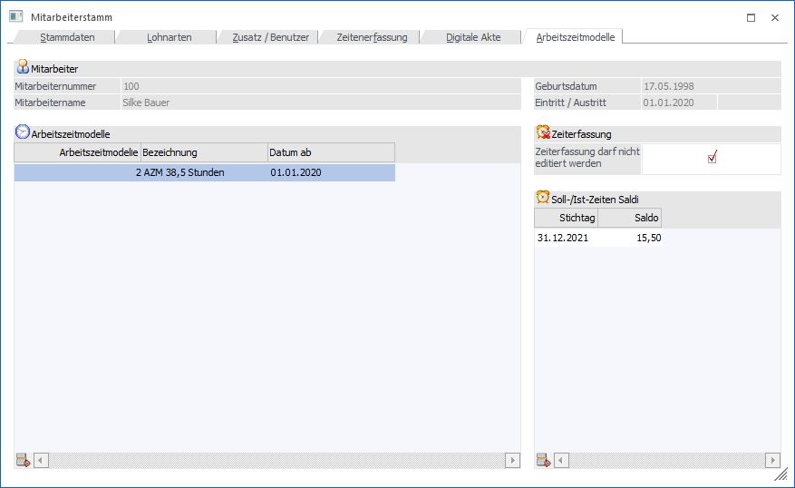
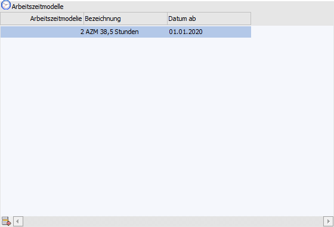
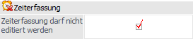
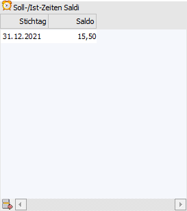

In diesem Register befindet sich eine Übersicht über die hinterlegten Arbeitszeitmodelle für den jeweiligen Mitarbeiter bzw. können Arbeitszeitmodelle entsprechend hinterlegt werden.

Folgende Eingabefelder, Einstellungen und Informationen stehen zur Verfügung:
Mitarbeiter

Ø Mitarbeiternummer / Mitarbeitername / Geburtsdatum / Eintritt / Austritt
Im oberen Teil des Fensters werden Daten des Mitarbeiters, welche gerade bearbeitet wird angezeigt.
Tabelle "Arbeitszeitmodelle"

In der Tabelle werden die Arbeitszeitmodelle des Mitarbeiters hinterlegt. Folgende Spalten stehen hierbei zur Verfügung:
Ø Arbeitszeitmodelle
Über den Matchcode bzw. die Autovervollständigung kann ein bestehendes Arbeitszeitmodell ausgewählt werden. Die Arbeitszeitmodelle werden unter dem Menüpunkt "SMART - Stammdaten - Arbeitszeitmodelle" angelegt.
Hinweis
Das Arbeitszeitmodell ist für die Arbeitszeitprüfung relevant.
Ø Bezeichnung
Die Bezeichnung wird aus dem ausgewählten Arbeitszeitmodells angedruckt und ist nicht editierbar.
Ø Datum
Hier wird das Gültigkeitsdatum des Arbeitszeitmodelles eingetragen.
Zeiterfassung

Ø Zeiterfassung darf nicht editiert werden
Über diese Option kann gesteuert werden, ob der Mitarbeiter die Berechtigung hat, seine eigene Zeiterfassung ohne eine Korrekturanfrage zu editieren.
Soll-/Ist-Zeiten Saldi

In diesem Bereich können die Vorwerte bzw. Saldi aus Vorprogrammen für die Zeiterfassung eingetragen werden.
Ø Stichtag
Eingabe des Stichtages ab wann der Saldo gerechnet werden soll.
Hinweis
Hier sollte immer der Letzte der Periode hinterlegt werden.
Ø Saldo
Eingabe des Saldos bzw. der Stunden aus den Vorprogrammen.
Tabellenbuttons

Ø Zeile entfernen
Mit dem Button können Arbeitszeitmodell-Zeilen bzw. Ist-Zeiten Saldi aus der jeweiligen Tabelle gelöscht werden.
Ø Ausgabe Excel
Durch Anwahl des Buttons "Ausgabe Excel" wird der Inhalt der aktuellen Tabelle an Microsoft Excel übergeben.
Ø Tabelleneinstellungen speichern
Die Spalten einer Tabelle können grundsätzlich an beliebige Positionen verschoben, bzw. in der Breite entsprechend angepasst werden. Durch Anwahl des Buttons "Tabelleneinstellungen speichern" werden die Einstellungen benutzerspezifisch gespeichert und bei dem nächsten Aufruf des Programmpunktes wieder vorgeschlagen.
Ø Gesamteinstellungen speichern
Im Gegensatz zu "Tabelleneinstellungen speichern" können mit "Gesamteinstellungen speichern" mehrere Tabellenaufbauten gespeichert und nach Wunsch geladen werden. Zusätzlich werden Sonderfunktionen der Tabelle (z.B. "Spalte gruppieren") ebenfalls bei der Speicherung bedacht.